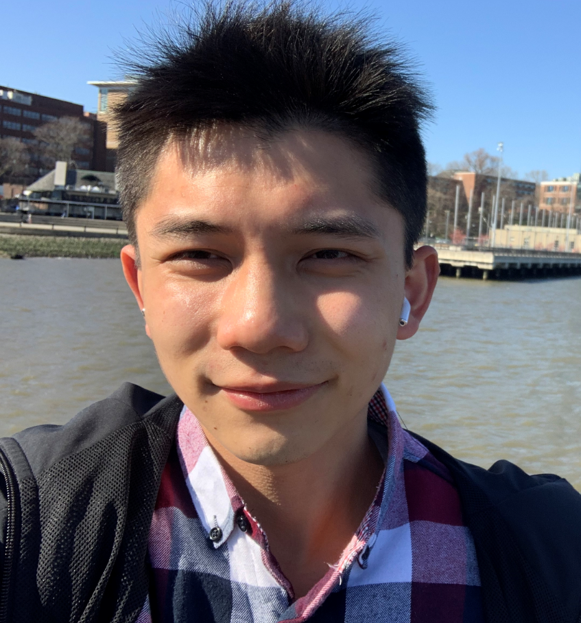

Songhan YuMaster of Computer Science
Dept. of Computer Science |
 |
I got my fourth-year bachelor of engineering in Electrical Engineering at Tianjin Polytechnic University. After that, I received my master scholarship and am pursuing my M.S. degree of Computer Science.
Academic Collaboration Platform